【ベトナム一人旅 Day1】
「初海外一人旅！ホーチミンに到着」
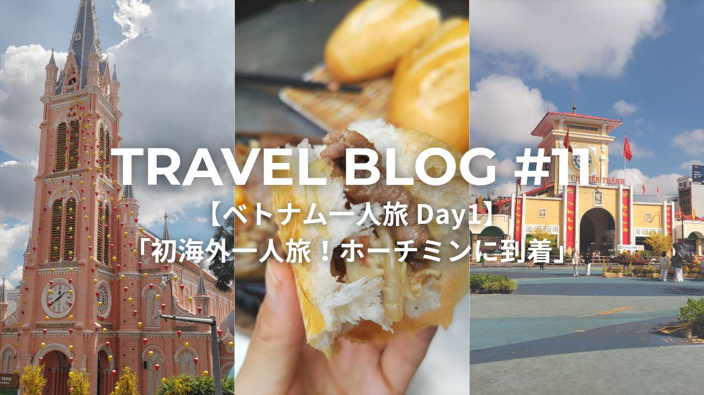
Trip Info
Place
ベトナム / ホーチミン
Date
2026.02.27〜03.02
Transport
飛行機・タクシー・バイクタクシー
皆様こんにちは。ミナです。
今回のノートは、私の海外一人旅デビューの記録です。
心臓ばくばくでしたが、それ以上に楽しい旅になりました。
※このノートでは、［1VND＝0.006円］で計算しています。
今から人生初の海外一人旅ということで、わくわくが止まりませんでした。
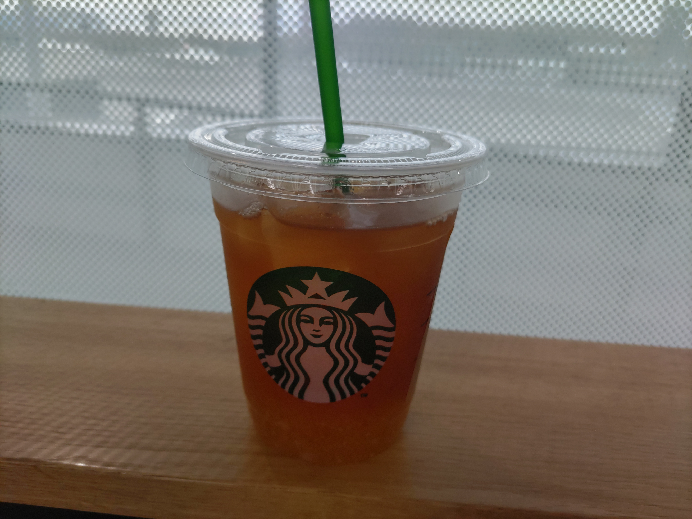
飛行機に乗る前はスタバ率が高い。しかも決まってゆずシトラスティー。
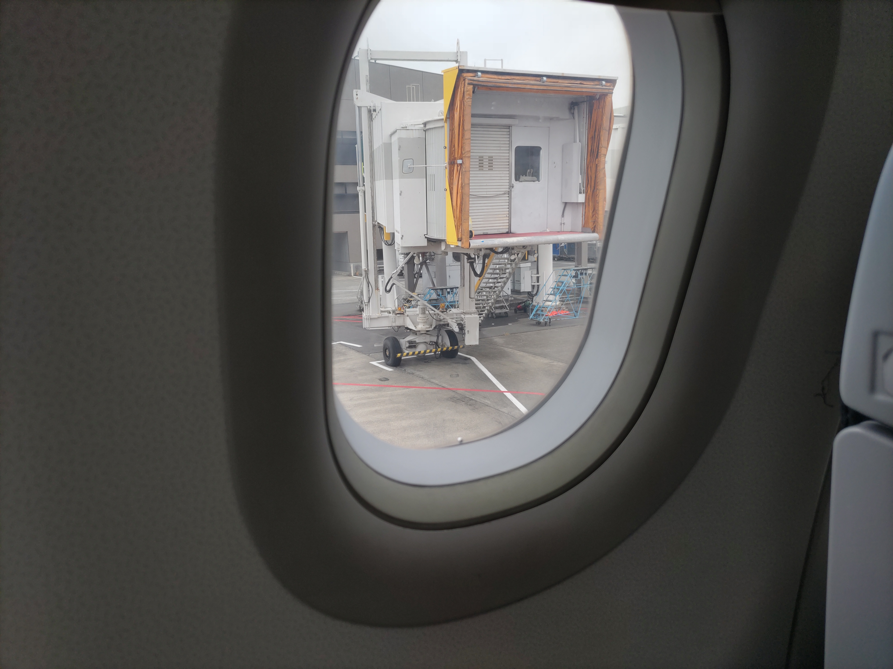
ついに出発！行ってきまーす！！！
約７時間のフライトを経て、やっと着きました～！
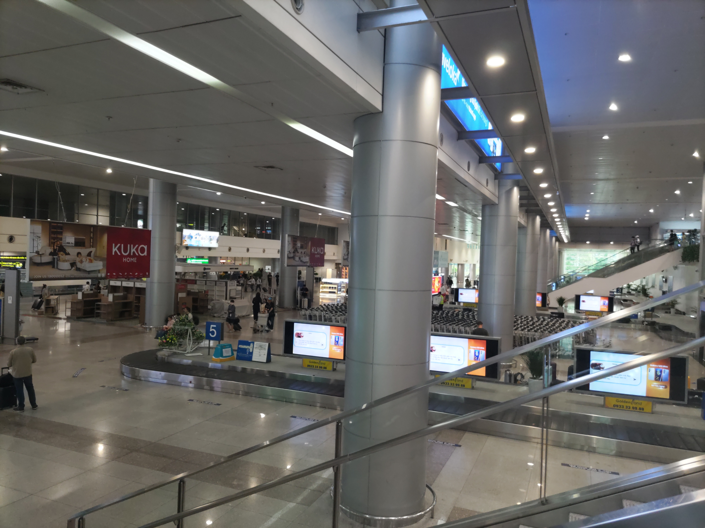
着いた瞬間から、暑い…！
日本は冬で寒かった分、余計に暑く感じます。
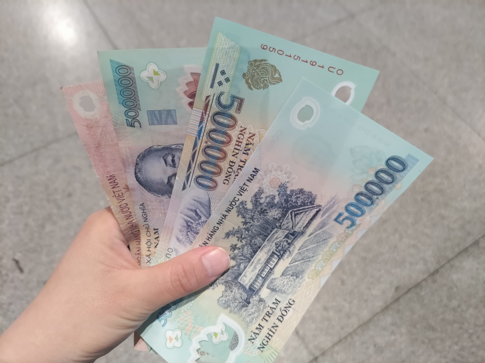
空港で一万円を両替して1,550,000VND。
桁が多すぎて、もうよく分かりません。
この後は空港からタクシーでひとまず宿に向かいます。
ベトナムでは「grab」という配車アプリがおすすめです！
…が、私も使うのが初めてだったので、最初にだいぶてこずりました💦
てこずっていると、色々なタクシー運転手の方から声がかかりますが、ぼったくられる可能性があるので配車アプリで乗りましょう！
ちなみに物価の分からない私は、おそらく相場の十倍の値段で「乗らないか？」と声をかけられました。
今回泊まったのは「9 Hostel and Bar」というホステルです。
こちらの女性専用ドミトリーでアゴダから予約しました。
ちなみにタクシー代は700円弱でした。
日本と比べて安くてびっくり。
夕飯を食べに来ました。
やっぱり一食目はフォーを食べたいと思い、phoと書かれていたこちらのお店に入ってみました。
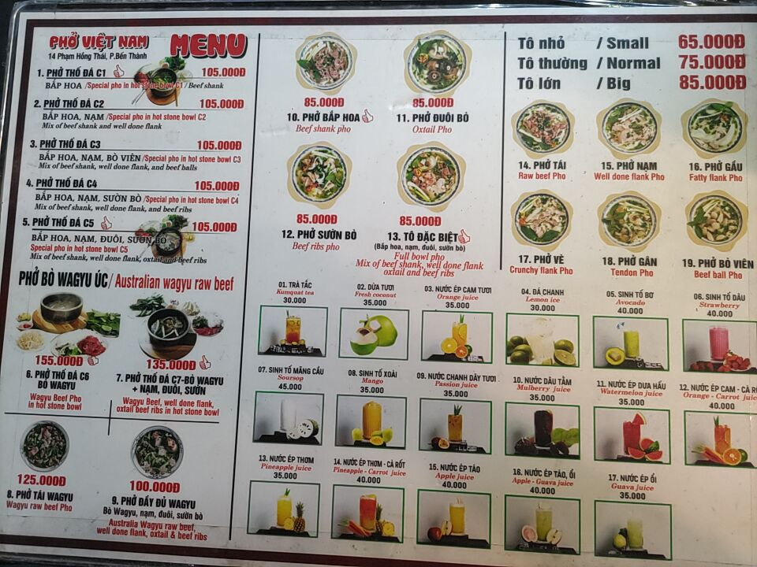
メニューが豊富です。
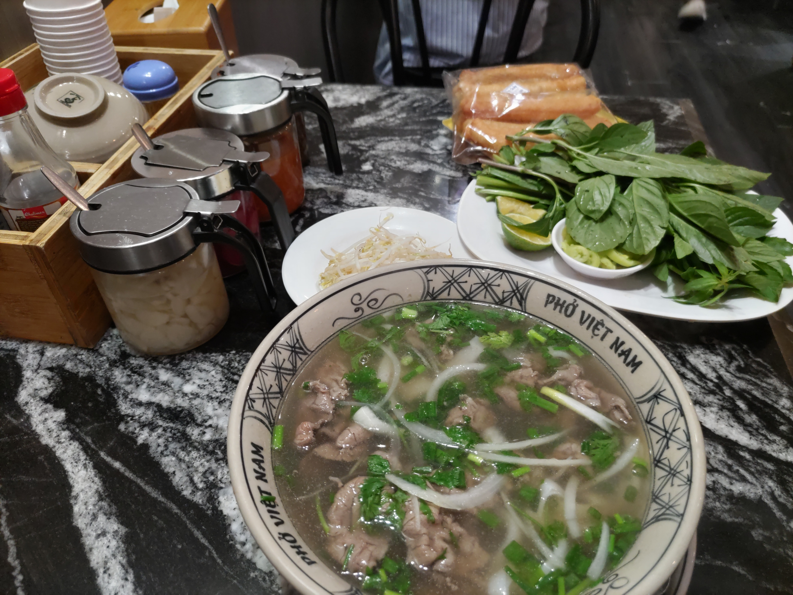
私が頼んだのは「Pho Bap Hoa〈Beaf shank pho〉」〈85,000VND / 510円〉。
牛肉のフォーです。
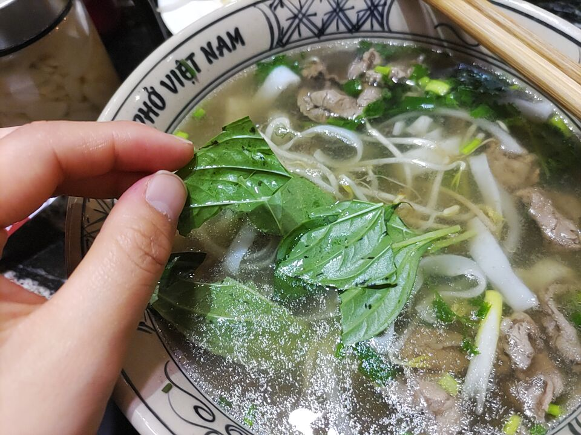
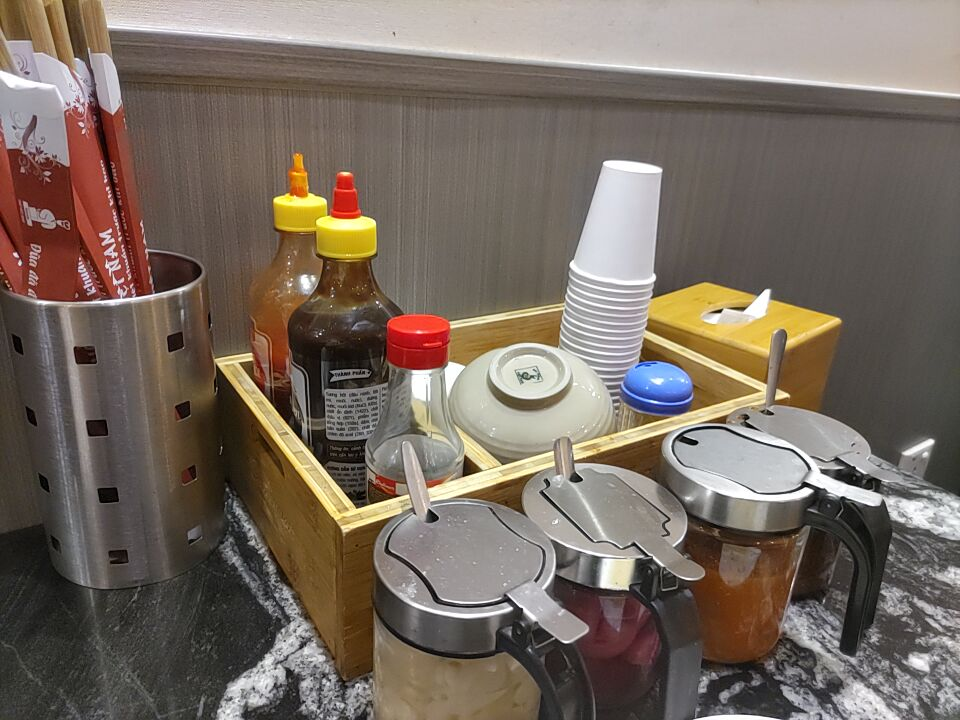
大量の草？もついてくるので、ちぎって入れたりしてみました。
個人的にライム？を絞るとさっぱり味変になって良かったです。
ピーマン？思って食べたものは青唐辛子で、死ぬほど辛かったのでお気を付けください。
卓上の調味料には色んなものがありました。
一旦ホステルに戻った後、ブイビエン通りにやってきました。
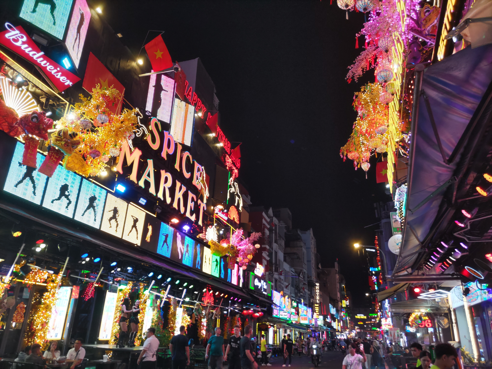
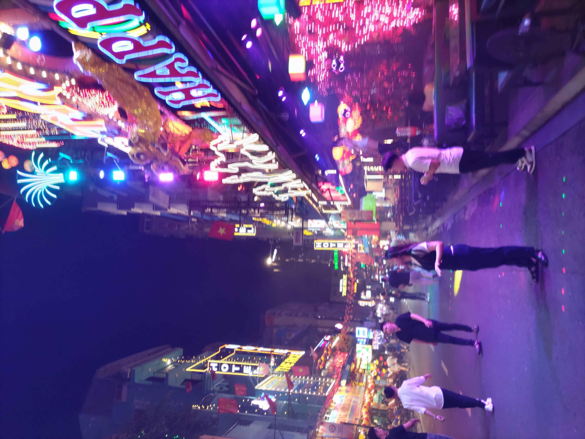
ここは「バックパッカー通り」と呼ばれる有名な通りで、どこもかしこも爆音でギラギラしていました。
若い女性たちが、きわどい衣装を着て無表情で客引きしているのを見て、少し闇を感じました。
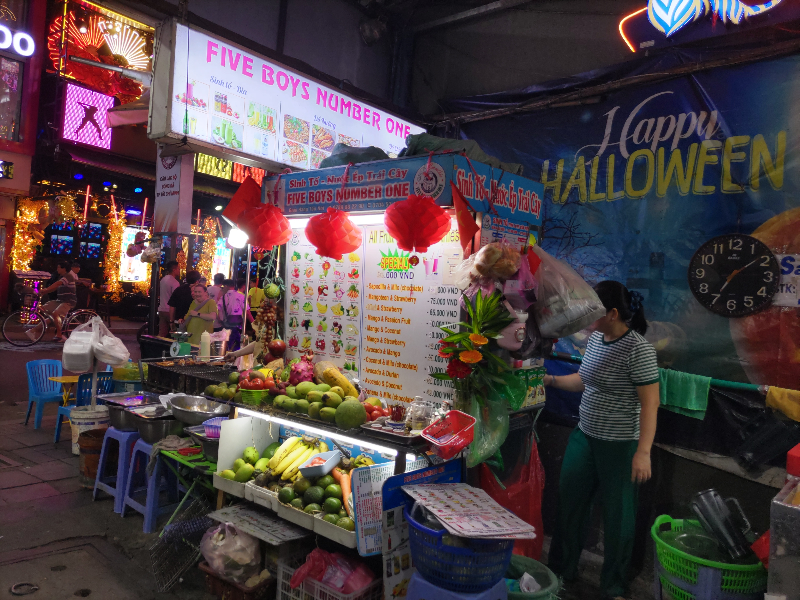
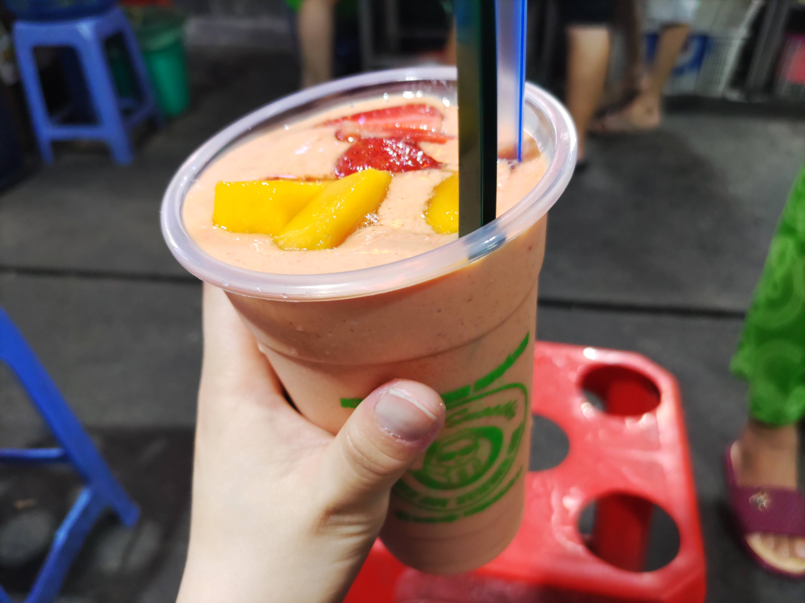
ブイビエン通りの路地にあった露店で、「シントー」を買いました。〈mango & strawberry / 50,000VND / 300円〉
シントーというのは、ベトナム版フルーツスムージーみたいなものです。
日本の物より、少し甘くてなめらか？な感じの飲み物でした。
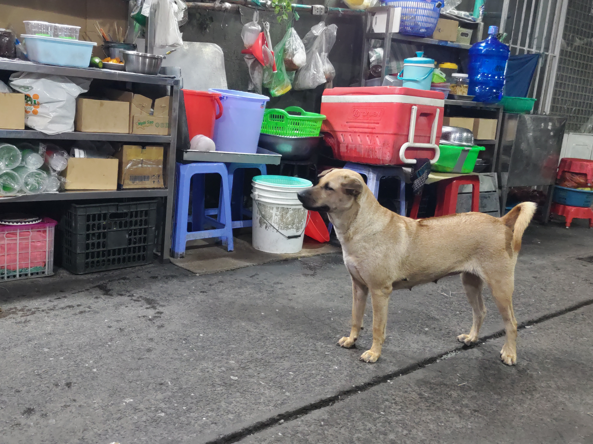
ちなみにこの辺りには、めちゃ野良犬ちゃんたちがいました。
可愛いけど…ベトナムって狂犬病大丈夫だったっけ？と不安になりながらシントーを飲んでました。
この日はこのままホステルに帰り、即シャワーを浴びて就寝しました。
ちなみにシャワーは男女共用スペースなので、上裸の男性と鉢合わせて気まずかったです。あとはシャワーがうまく出ず、下についている小さい蛇口みたいなので頭を洗ったりもしました笑。
でもこれも旅って感じがして、面白い経験になりましたし、旅レベルも上がった感があります。
今回の旅記録は以上です。
ここまでご覧いただきありがとうございます。
次回のブログも是非見てください♪
ではまた！